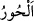

“Hani havarilere “Bana” rubûbiyyet ve ulûhiyyette benim birliğime “ve
peygamberime” onların risaletine (getirdikleri mesajlara) inanarak onu ileri geri
çekip yerinden oynatmadan “îman edin!” diye ilham etmiştim, bildirmiştim.”
“Filan filanın havarisidir.” demek “Onun en saf ve hâlis dostudur” demektir. Bu
kelime, saf beyaz anlamına gelen “
” den türemiştir. Îsâ (a.s.)’ın ashabına bu ismin
verilmiş olması, niyetlerinin halis, iç dünyalarının tertemiz olmasından ileri
gelmektedir. Bu havarilerin bazısı idarecilerden, bazısı balıkçılardan, bazısı çamaşır
yıkayıcılarından, bazısı boyacılardan idi.
Mânâ şöyledir: “Ey Muhammed! “Allah’a ve peygamberlerime îman edin” diye
peygamberlerimin ağzından, kendilerine emrettiğim ya da kendilerine ilham ettiğim ve
kalplerine ilettiğim zamanı hatırla!”
Sanki “Âyetin önceki kısmında ilham edilenler onlara bildirildiğinde ne yaptılar?”
diye bir soru sorulmuş cevap olarak da şöyle buyurulmuştur:
“Onlar “îman ettik, bizim müslüman olduğumuza” imanımızda samimi olduğumuza
“sen de şâhit ol!” demişlerdi.”
[65]. Buhârî, Rifak, 53; Müslîm, Fedail, 26
[66]. Buhârî, Enbiyâ, 3
[67]. Bu konunun tafsilatı, Âl-i İmran sûresinin 49. âyeti tefsirinde geçmişti.